Whale1
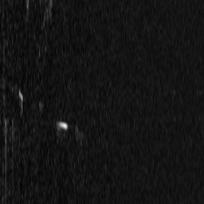 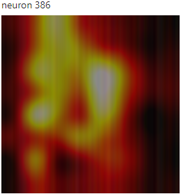Whale2
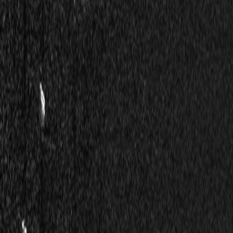 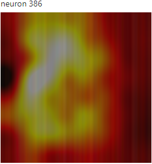vessel1
 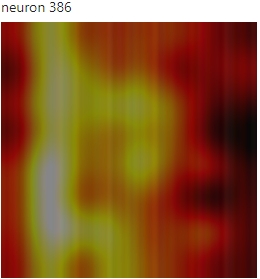
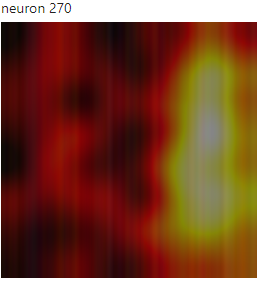
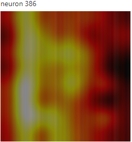
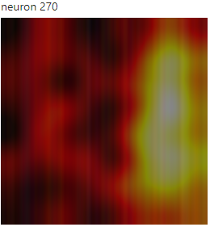
vessel2
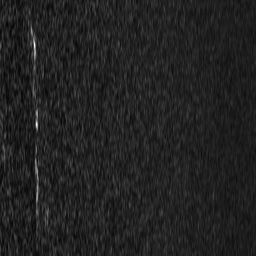 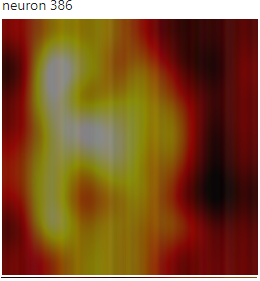Previous work in this field, including the paper we have based our work on, were mostly related to detecting and classifying biologic sound signatures from underwater acoustic microphones. The goal of our work is to try and classify whale calls, vessels, fish and background noise. Training to detect vessels proves to be a difficult problem with the given dataset given the large imbalance between the relatively small number of vessels and fish, and the large proportion of whales and background noise. The initial paper also used a slightly modified version of the ResNet-50 model. We theorized that ResNet-50 was unnecessarily large for the classification task, so we experimented with smaller models to compare performance between them.
Our work builds off of A Convolutional Neural Network for Automated Detection of Humpaback Whale Song in a Diverse, Long-Term Passive Acoustic Dataset [1]. The dataset used in this paper and our work is gathered by NOAA in the Pacific Islands Passive Acoustic Network (PIPAN) which takes advantage of High-frequency Acoustic Recording Package (HARP) hydrophones, specially designed for detecting whales [2, 3]. The PIPAN network of hydrophones uses a sampling rate of 10kHz and saves the data in a special audio format, called xwav which contains additional metadata. The data was transformed via an “acoustic front end" to a spectrogram via a Short-Time Fourier Transform and was normalized using Per Channel Energy Normalization (PCEN) [5]. The hyper parameters of PCEN were learned by the model during training. The resulting spectrogram had a size of 96 frequency bins x 128 time bins. This was then passed through a slightly modified ResNet-50 model. A ResNet-50 model was chosen due to its proven performance in classifying audio data [6, 7]. The model is a binary classifier, outputting positive for a whale, or negative for no whale. The performance of the model was determined across a 75s chunk of audio data. The spectrogram the model takes as input is smaller than 75s. Therefore, the model has multiple attempts to be able to detect, or not detect, a whale. Across these 75s segments, the paper reports the model was able to achieve an average precision of 0.97 and AUC-ROC of 0.992. We feel that determining model performance on 75s audio segments is useful operationally for NOAA but misleading for true model performance. This is why we report accuracy across each spectrogram as opposed to multiple at a time. The model also only detected whale noises, and ignored the other labels that appeared in the dataset. Being able to detect vessels as well as whales posed an interesting challenge that we chose to explore. Additionally, given the general rarity and lack of complexity in a spectrogram in comparison to a traditional image that ResNet-50 was initially designed for. We feel that a smaller network could achieve similar results while greatly reducing power consumption and compute complexity allowing for off site deployment of these models.
We processed around 1,000 hours of audio data into spectrograms, totalling 4-6TB of raw audio. Given computation limitations, we were forced to use our own implementation of the short-time Fourier transform (STFT) as opposed to the original plan of re-using the original paper’s acoustic front end. This ended up being beneficial as we are now able to control the entire data pipeline from audio to classification. We took advantage of the additional metadata contained in the XWAV file format and only read and processed 225s chunks of data as opposed to the entire 24 hour XWAV file. We then sliced the resulting spectrogram, which was longer than 256 time bins down to center the labeled classification in the time axis. This was identified early on as a potential issue with the training data. This method always places a whale call in a very similar y position, and therefore, would potentially only learn to detect whale songs that occur in the middle of the spectrogram as opposed to whale songs that occur on the edges of spectrograms.
We converted the audio files into spectrogram images using a similar method to the original paper. We passed the data through the STFT and PCEN layer. Due to computational, storage, and time limitations, our STFT and PCEN used smaller window sizes than the original paper. Due to similar constraints, the PCEN hyper parameters were unable to be trained by the model and instead were tuned manually with sample spectrograms. The PCEN algorithm used was written in PyTorch to allow for better future integration with our current model [5]. The hyperparameters we decided on were: s=0.008, alpha=0.8, delta=200, r=0.05, length of fast fourier transform window=4,096, number of mel frequency bins=256, hop length=300, hann window, and a minimum and maximum frequency of 10Hz and 4kHz respectively. The PCEN specific hyperparameters were influenced heavily by the PCEN paper [8]. These hyperparameters were found to be able to both emphasize whale calls and vessel noise.
The spectrograms that are output are much larger and contain more information to learn than the original paper’s spectrogram of 128x96 pixels. We believe that the intricacies of the different classes are separated by very small differences in pixels. Therefore, we believe the detail in the image will lead to enough of a benefit in accuracy that it would outweigh the drawbacks of decreased data loading speed. These images (256 x 256 pixels), could then be fed into a convolutional neural network to then be classified into our target classes: Whale, Vessel, Fish, and Background (extended from the above paper which just classifies between Whale and Background). While the original paper used 64 x 64 pixel images into a resnet-50 architecture, we implemented two distinctly smaller convolutional networks: a basic convolutional network without residual connections, and resnet-18. Our intention was to perform the classification task using smaller networks to see if we could get similar or better results. The models were trained with support provided by Research Computer at Northeastern University [4]. The models were trained with 1 P100 GPU with a 28 core CPU with access provided through the Undergraduate Courses Cluster.
Our developed convolutional network used four blocks of [conv2d -> dropout -> ReLU -> batchnorm], followed by an avgpool. This yielded a [16, 1, 1] dimensional vector that we then passed into a linear layer and softmax layer to yeild probabilities for each of our 4 output classes. This network had 9152 parameters total, while the ResNet-18 architecture used 11.17M parameters. We weighted the cross entropy loss function inversely proportional to the distribution of image classes in the training set. The class distribution was: 55.8% background, 0.8% fish, 2.1% vessel, and 41.3% whale. Thus, vessels and fish, which had significantly less images than whale and background in the training set, were weighted significantly more by the loss function. This solution is equivalent to balancing the distribution of images in each class, and allows us to find better classification barriers between the common and uncommon classes.
Our resnet-18 model was able to achieve an 89% train accuracy and an 89% validation accuracy. This model was able to make predictions on the two minority classes, but had slightly worse performance on the two majority classes than our convolutional model did. The resnet-18 model had pretty good discriminability amoung all classes (each class had more correct predictions than incorrect ones). This accuracy was also achieved after tuning of our various hyperparameters. Our convolutional network was able to outperform resnet-18 in terms of precision for background and whale, while resnet-18 made slightly more misclassifications in both directions.
ResNet-18 Confusion Matrix
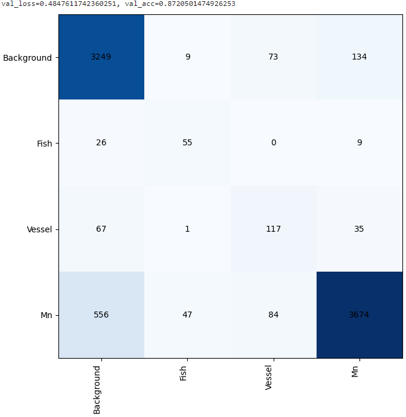Simple Model with 9,152 parameters Confusion Matrix
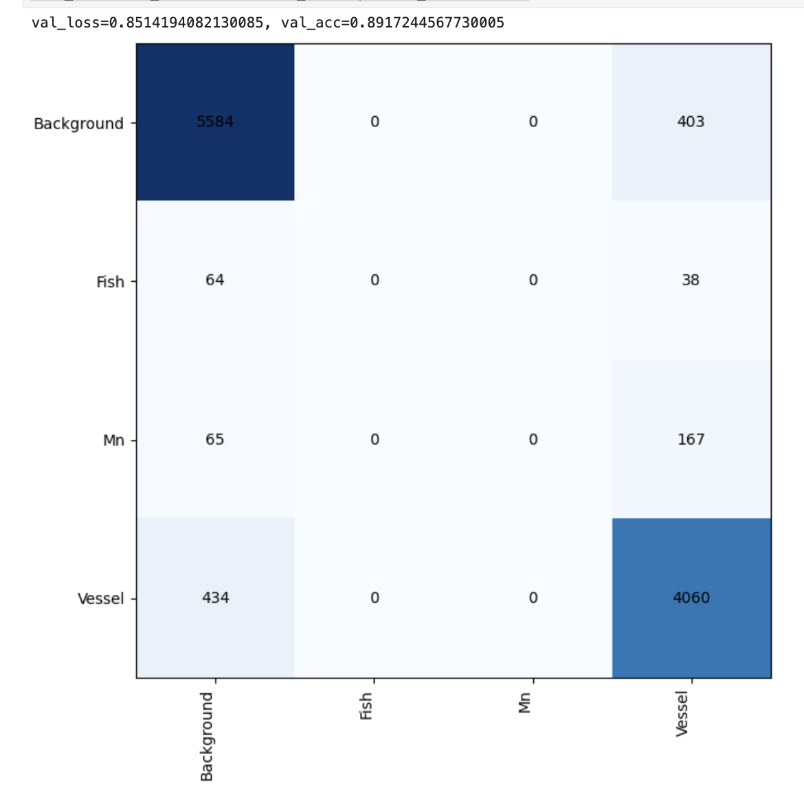Example Spectrograms:
Whale1
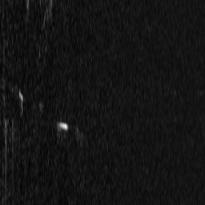 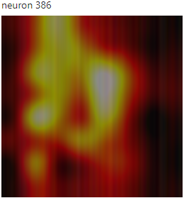Whale2
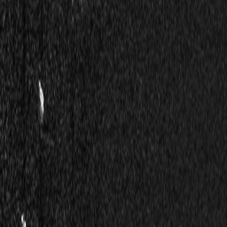 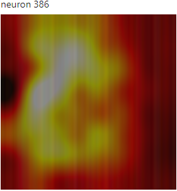vessel1
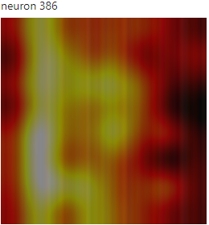
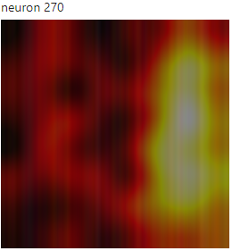
vessel2
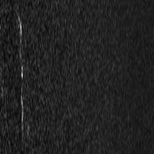 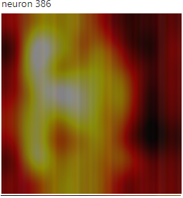